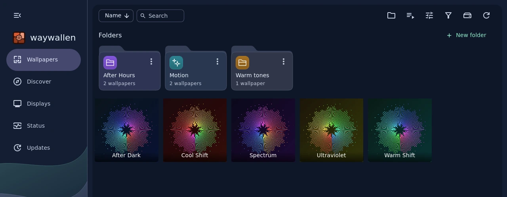
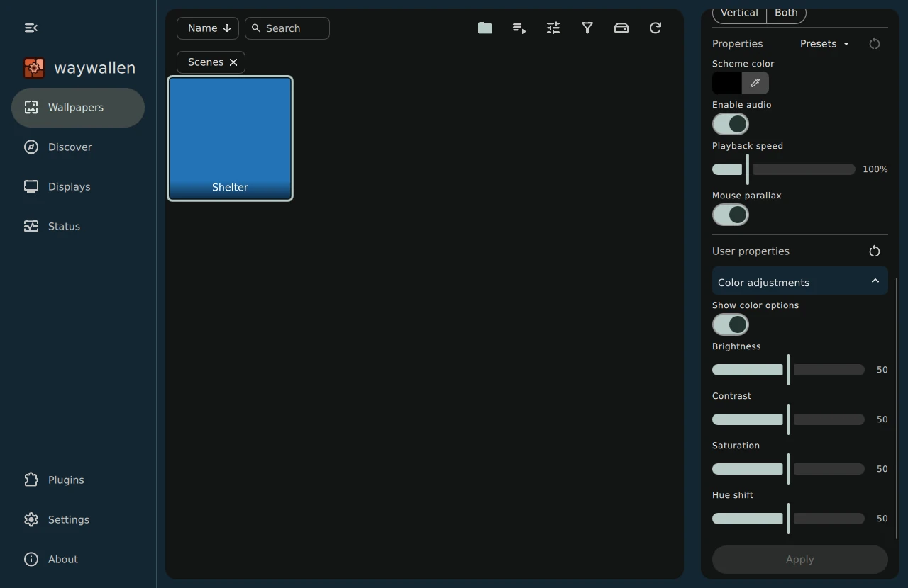
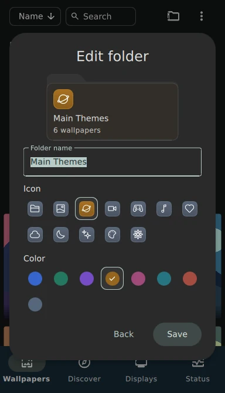
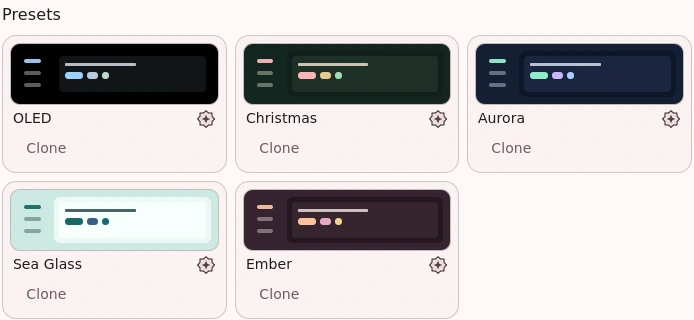

Who we are
A desktop of your own.
Waywallen Custom is our independent build of Waywallen, the open-source live wallpaper manager for Linux.
Our mission is to make live wallpapers easier to organize and personalize. We want Linux wallpaper fans to help shape what we build next.

Scene Colors
Find the
right light.
Adjust brightness, contrast, saturation, and hue in a live preview. Waywallen keeps your settings for each scene.
Try the color demoScene controls
See the controls in Waywallen

Wallpaper folders
Give every wallpaper a place.
Group wallpapers by mood, project, or display. Each folder has a name, an icon, and a color you can change from the library.

Launcher themes
A different look in a click.
Pick a built-in preset or clone one and make it your own. Change the palette, texture, and motion of the launcher.

See all the presets in Waywallen
Linux setup
Put it on your desktop.
The x86-64 Flatpak includes Scene Colors. Accept the invitation to the private Waywallen repository and sign in to GitHub to download it.
-
Install the Flatpak
Run these commands in the folder containing the downloaded Flatpak.
flatpak install --user ./Waywallen-Arch-Themes-x86_64.flatpak flatpak run --user --branch=custom org.waywallen.waywallen -
Add your Wallpaper Engine library
Open Wallpapers → Library Manager, add a Wallpaper Engine source, and select the Steam library directory containing
steamapps. -
Open a scene and tune it
Choose Live preview, then turn on Show color options under Color adjustments.